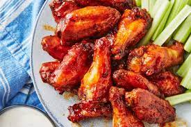

"Chicken Wings"

Description
Testing out Hooters wings to see if they match up to the cleavage!
They look too heavily breaded but time will tell.
- Chicken
- Peanut oil
- Pepper
- Garlic
- Swiss cheese
- Thousand Island dressing
- Mustard
- Half Sour pickles
Steps
- Slice the chicken
- Coat both slices with mustard on one side only.
- Add huge heaps of steaming hot pastrami and corned beef. At least 1/2 lb of each.
- Add sauerkraut that falls off the sides of the pastrami and corned beef.
- Lay two large slices of Swiss cheese on top of the sauerkraut which must also be steaming hot.
- Now drizzle the Thousand Island dressing across the Swiss cheese.
- Serve with kosher dill pickles and Dr. Brown's soda for full effect.